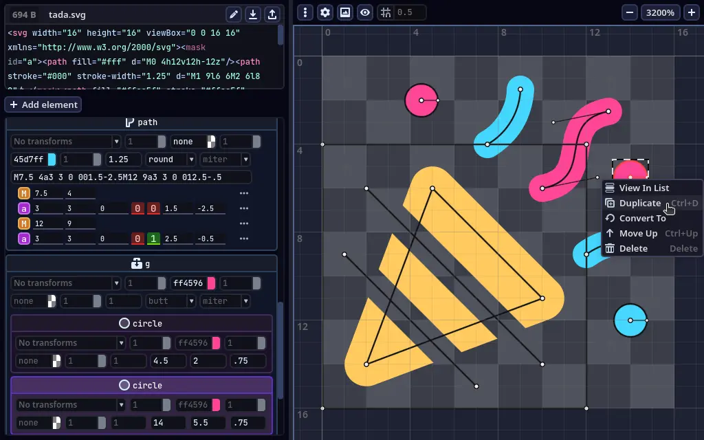

GodSVG is an editor for Scalable Vector Graphics (SVG) files in early development. Unlike other editors, it represents the SVG code directly, doesn't add any metadata, and even lets you edit the SVG code in real time. GodSVG aims to be an editor for SVG code with low abstraction, producing clean and optimized files.

• Interactive SVG editing: Modify individual elements of an SVG file using a user-friendly interface.
• Real-time code: As you manipulate elements in the UI, code is instantly generated and can be edited.
• Optimized SVGs: The generated SVG files are small and efficient, and there are many options to assist with optimization.
Who is making GodSVG?
GodSVG was started in May 2023 by me (MewPurPur) and open-sourced in June 2023. Since the open-sourcing, other people have joined in to help, but I still do the vast majority of the work. Everyone who has made major contributions is listed inside GodSVG's "About" dialog.
GodSVG has been in alpha for so long... Will it ever release?
GodSVG 1.0-alpha1 released in December 2023. But GodSVG needs a lot more work, so it won't release until at least late 2025.
GodSVG is a hobby project that I dedicate a lot of effort and time to try and push to the finish line. But of course, I still need to work 8h a day and spend time on things like sleeping, chores, staying healthy. How long the release will take largely depends on how much support I get.
Donations are the best way to help, without them, GodSVG would be way behind where it is now. So if you're able to donate, I would be very grateful!
You can also help by spreading the word, and if you can, implementing features, enhancements, bugfixes, or discussing suggestions.
I tried GodSVG and found bugs and shortcomings.
GodSVG is not even in beta yet, so this is to be expected. Report any issues you have on Github.
What's so great about this "free and open source" thing?
GodSVG is Free and Open Source, all of its development happens in the open, developers are in the same communities as everyone else. You can see what's being developed and be sure that nothing shady is happening behind the scenes - because if I do something shady, people would find out in the source code and my project would suffer heavily.
GodSVG's source code can be found
on Github. This website's source code can also be found
on Github.
Do you have the social media?
I have accounts on some social media. All of them are owned by multi-billion tech companies! The unofficial ones won't always be on topic.
Official:
-
 Github repository for general surveillance of the developers.
Github repository for general surveillance of the developers.
-
 Discord server for development and casual chat.
Discord server for development and casual chat.
Unofficial (personal):
-
 tweeter account for hot takes I'll regret later.
tweeter account for hot takes I'll regret later.
What are your plans for GodSVG?
GodSVG is currently meant to be only an assisted SVG code editor - it doesn't save anything unnecessary to the SVGs, but this also means it can't store things like layers. Also, there are no plans for animation.
In my opinion, GodSVG is most useful for teaching the SVG format, creating simple iconography, optimizing existing SVGs, and creating SVGs with code. If your use cases are different, consider using a more artistically-inclined SVG editor.
Making GodSVG better as an assisted SVG code editor is what I'm going for at the moment.
I speak one of Earth's many languages! Do you need help with translation?
Bonjour! GodSVG is community-translated and you can read how to do it here. Hit me up on Discord if you need help.
I hope this gave you all the answers you wanted – even the ones you didn't know you needed! Hit me up on Discord if you want to ask anything else.
Donations will help me push GodSVG through to a stable release. Right now, I have to balance out development with my regular job as I don't get enough from donations.
I have a few donation platforms set up, so you can choose the one you prefer: